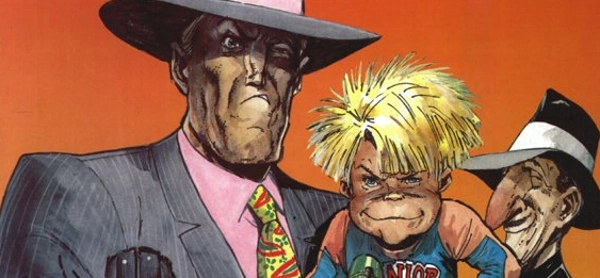

Well in advance of Arnie-vehicle Junior from 1994, this comedy tells the tale of (entirely male) mobster Al Bestardi, brow-beaten into carrying his wife's baby to term. That she's also the daughter of the mob boss explains his motivation.
Some bookends place this otherwise standalone tale in the history of the Dreddverse.
Art by Carlos Ezquerra
| Story Title | Parts | Pages | w indicates a wraparound coverCovers | Year(s) | Issues | Writer | Artist | Colourist | Letterer |
|---|---|---|---|---|---|---|---|---|---|
| Al's Baby | 12 | 93 | M1.04: Carlos Ezquerra M1.15: Carlos Ezquerra [reprinted for X16] 2 | 1990-1991 | Reprints: X16M1.04-M1.15 | John Wagner | Carlos Ezquerra | <-- | Gordon Robson |
| Blood on the Bib | 9 | 72 | M2.16: Carlos Ezquerra M2.21: Carlos Ezquerra 2 | 1992-1993 | M2.16-M2.24 | John Wagner | Carlos Ezquerra | <-- | Tom Frame |
| Public Enemy #1 | 11 | 60 | 0 | 1997 | 1034-1044 | John Wagner | Carlos Ezquerra | <-- | Steve Potter |
| >> Teasers << | |||||||||
| Blood on the Bib | 4 | 4 | 0 | 1992 | M2.11-M2.14 | n/a | Carlos Ezquerra | <-- | n/a |
| year | episodes | pages |
| 1983 | 0 | 0 |
| 1984 | 0 | 0 |
| 1985 | 0 | 0 |
| 1986 | 0 | 0 |
| 1987 | 0 | 0 |
| 1988 | 0 | 0 |
| 1989 | 0 | 0 |
| 1990 | 1 | 8 |
| 1991 | 11 | 85 |
| 1992 | 3 | 24 |
| 1993 | 6 | 48 |
| 1994 | 0 | 0 |
| 1995 | 0 | 0 |
| 1996 | 0 | 0 |
| 1997 | 11 | 60 |
| 1998 | 0 | 0 |
| 1999 | 0 | 0 |
| 2000 | 0 | 0 |
| 2001 | 0 | 0 |
| 2002 | 0 | 0 |
| 2003 | 0 | 0 |
| 2004 | 0 | 0 |
Comic strip data (excludes other content):